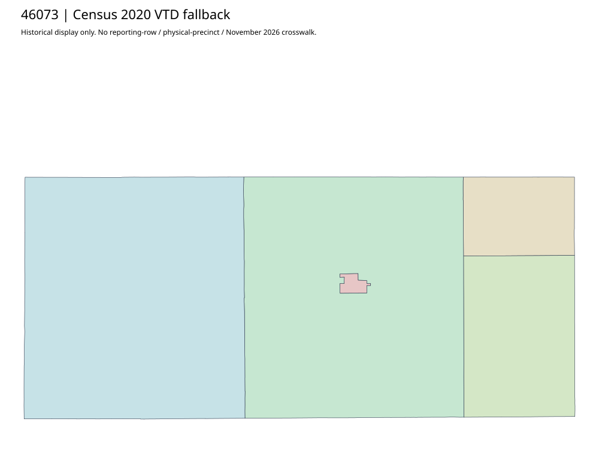

304 ordered indexJerauld | 46073
Official Jerauld auditor parent/recheck acquired with election-supervisor responsibilities. No directly linked precinct-map original located in captured chain. Complete Census2020 five-VTD fallback retained; source labels/counts cannot approve physical/current crosswalks.
1 priority / 5 full historical observations. Parent is a summary ancestor, not additive to leaves. No physical feature matches or current reporting crosswalk approved.
Acquired shared-parent assets
No complete county precinct-map original acquired from this bounded chain. Use qualified fallback; roster/landing/error bodies are retained as evidence.
Census2020 fallback
5 native historical VTD features. Entire785-feature ZIP original retained once, all66 counties. Yankton has one countywide VTD. No current/reporting allocation. complete original gzip

Full binary/attribute/geometry QA
Observed authority/acquisition routes
Complete SOS authority fields including original blank/masked values: parent inventory. No contacts were sent.
Ordered full children
- Precinct-1 | 492 source votes | priority
- Precinct-2 | 158 source votes | remainder
- Precinct-3 | 132 source votes | remainder
- Precinct-5 | 116 source votes | remainder
- Precinct-4 | 100 source votes | remainder